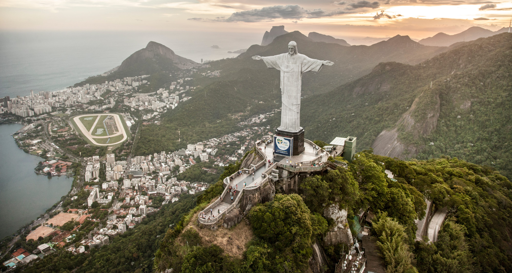
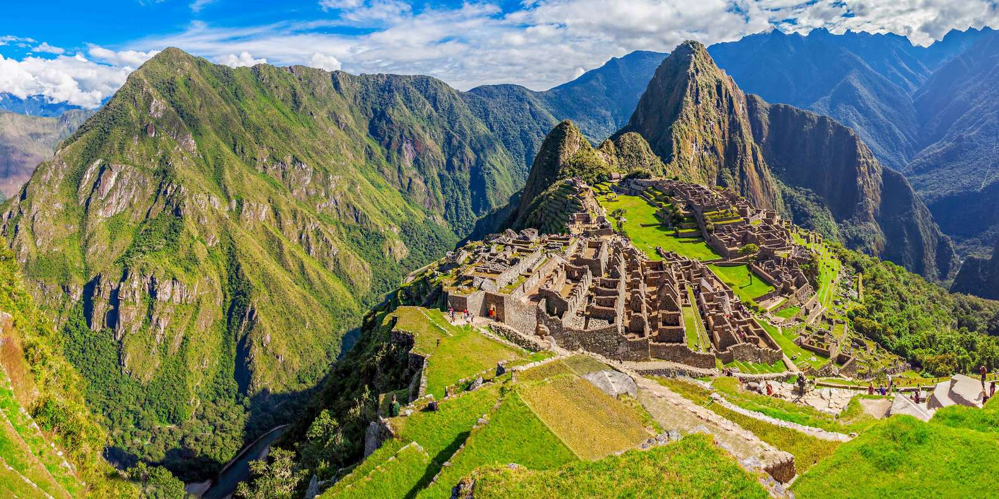
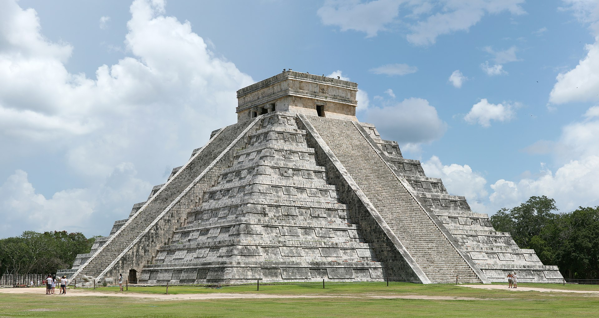

Statua Chrystusa Zbawiciela
Wstęp
Statua Chrystusa Zbawiciela, znana jako "Cristo Redentor", to monumentalny pomnik znajdujący się na szczycie góry Corcovado w Rio de Janeiro, Brazylia. Została odsłonięta 12 października 1931 roku i od tego czasu stała się jednym z najbardziej rozpoznawalnych symboli miasta oraz całego kraju. Statua mierzy 30 metrów wysokości, a wraz z cokołem osiąga 38 metrów, co czyni ją jedną z najwyższych tego typu rzeźb na świecie.
Historia powstania
Pomysł budowy statuy pojawił się już w latach 50. XIX wieku, kiedy to ksiądz Pierre-Marie Bosa zaproponował stworzenie chrześcijańskiego pomnika. Jednak projekt został zrealizowany dopiero w latach 20. XX wieku, kiedy rozpoczęto zbiórkę funduszy na jego budowę z okazji setnej rocznicy niepodległości Brazylii. Głównym projektantem był Heitor da Silva Costa, a w realizacji pomnika uczestniczył także francuski rzeźbiarz Paul Landowski.
Symbolika i znaczenie
Statua Chrystusa Zbawiciela symbolizuje duchową opiekę nad miastem i narodem brazylijskim. Rozpostarte ramiona Jezusa wyrażają boskie współczucie oraz zapraszają gości przybywających do Rio de Janeiro. Pomnik stał się także miejscem pielgrzymek, a u jego podstawy znajduje się kaplica Matki Bożej z Aparecidy.
Ciekawostki
Statua została uznana za jeden z siedmiu nowych cudów świata w 2007 roku. Pomnik waży ponad 600 ton i jest widoczny z niemal każdego miejsca w Rio de Janeiro dzięki swojemu położeniu na wysokości 740 metrów nad poziomem morza. W 2023 roku piorun uderzył w posąg, co wzbudziło zainteresowanie i refleksje na temat jego symboliki.
Powrót na początek stronyMachu Picchu
Wstęp
Machu Picchu, znane jako "Zaginione Miasto Inków", to starożytna osada położona w Andach w Peru, na wysokości około 2400 m n.p.m. Zbudowane w XV wieku, prawdopodobnie za panowania króla Pachacuti, Machu Picchu pozostaje jednym z najbardziej fascynujących i tajemniczych miejsc na świecie. Odkryte w 1911 roku przez amerykańskiego profesora Hiram Bingham, miasto zachwyca swoją architekturą oraz historią.
Architektura i inżynieria
Machu Picchu jest przykładem mistrzostwa architektonicznego Inków. Budynki zostały wzniesione z lokalnego granitu, a ich konstrukcja charakteryzuje się precyzyjnym dopasowaniem kamieni bez użycia zaprawy. Trapezoidalne otwory okienne i drzwiowe nie tylko dodają estetyki, ale także zwiększają stabilność budowli, co czyni je odpornymi na trzęsienia ziemi. W mieście znajdują się liczne fontanny, akwedukty oraz systemy wodne, które świadczą o zaawansowanej technologii inżynieryjnej Inków.
Znaczenie kulturowe
Cel budowy Machu Picchu pozostaje niejasny; niektórzy badacze sugerują, że mogło to być miejsce kultu religijnego lub pałac królewski. Inne teorie wskazują na rolę miasta jako centrum handlowego lub stacji do testowania nowych upraw. Machu Picchu było także ważnym miejscem dla kobiet znanych jako "Dziewice Słońca".
Odkrycie i turystyka
Pomimo że Hiszpanie nigdy nie odkryli Machu Picchu podczas podboju Inków, miasto z czasem zostało porzucone i zarośnięte roślinnością. Dziś jest jednym z najważniejszych miejsc turystycznych w Peru i zostało wpisane na listę światowego dziedzictwa UNESCO w 1983 roku. Jego niezwykła historia oraz malownicze położenie przyciągają miliony turystów rocznie, czyniąc je jednym z najczęściej odwiedzanych miejsc na świecie.
Powrót na początek stronyChichén Itzá
Wstęp
Chichén Itzá to prekolumbijskie miasto położone na półwyspie Jukatan w Meksyku, które zostało założone przez Majów między IV a VI wiekiem n.e. Miasto rozkwitło szczególnie w okresie od X do XIII wieku, stając się jednym z najważniejszych ośrodków politycznych, ekonomicznych i religijnych w regionie. W 1988 roku Chichén Itzá zostało wpisane na listę światowego dziedzictwa UNESCO, a w 2007 roku uznane za jeden z Siedmiu Nowych Cudów Świata.
Architektura i styl
Chichén Itzá jest znane z różnorodności stylów architektonicznych, które odzwierciedlają wpływy zarówno kultury Majów, jak i Tolteków. Najbardziej rozpoznawalnym obiektem jest Piramida Kukulkana, znana również jako El Castillo, która została zbudowana w stylu Maya-Toltec. Piramida ma 30 metrów wysokości i jest ozdobiona rzeźbami Pierzastego Węża. Jej konstrukcja symbolizuje kalendarz Majów, z 91 stopniami na każdej stronie, co łącznie daje 365 dni w roku.
Znaczenie kulturowe
Chichén Itzá pełniło ważną rolę w religijnym życiu Majów. Zbiorniki wodne w mieście były miejscem składania ofiar, a rytuały związane z wodą miały kluczowe znaczenie dla lokalnej społeczności. W mieście znajdują się także inne istotne budowle, takie jak Świątynia Wojowników i Grupa Tysiąca Kolumn, które świadczą o zaawansowanej cywilizacji oraz jej tradycjach artystycznych.
Odkrycie i badania
Miasto zostało zapomniane na wiele wieków, aż do jego odkrycia przez Edwarda Thompsona w 1885 roku. W XX wieku rozpoczęto intensywne prace archeologiczne, które ujawniły wiele cennych zabytków i pomogły w rekonstrukcji historii Chichén Itzá. Dziś jest to jedno z najczęściej odwiedzanych miejsc turystycznych w Meksyku, przyciągające miliony turystów rocznie.
Powrót na początek strony